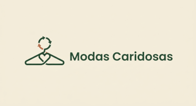

Fechamentos adaptados
Fechos magnéticos, velcros e zíperes adaptados podem facilitar o uso das peças por pessoas que apresentam dificuldades com botões e fechos convencionais.

Moda circular, acessível e inclusiva.
Acreditamos que a moda deve ser acessível a todas as pessoas, independentemente de suas características, necessidades ou condições físicas.
O Modas Caridosas busca incentivar uma relação mais consciente com as roupas, valorizando a diversidade, a inclusão e o direito de todos ao acesso à vestimenta.
A moda inclusiva considera as diferentes necessidades das pessoas durante o desenvolvimento e a utilização das roupas. Seu objetivo é proporcionar conforto, autonomia e praticidade, respeitando as particularidades de cada indivíduo.
Isso significa reconhecer que nem todas as pessoas possuem as mesmas necessidades e que a moda deve considerar diferentes corpos, mobilidades e formas de vestir.
Algumas adaptações podem tornar o ato de vestir mais simples e confortável para pessoas com diferentes necessidades.
Fechos magnéticos, velcros e zíperes adaptados podem facilitar o uso das peças por pessoas que apresentam dificuldades com botões e fechos convencionais.
Modelagens adequadas, tecidos confortáveis e cortes que consideram diferentes movimentos podem contribuir para uma experiência melhor durante o uso das roupas.
Soluções pensadas para facilitar o vestir podem contribuir para a independência e a autonomia das pessoas em suas atividades diárias.
A inclusão também envolve respeitar diferentes identidades, culturas, estilos e características individuais.
Por isso, defendemos uma moda que não imponha padrões e que valorize a liberdade de expressão, a representatividade e o respeito às diferenças.
A inclusão precisa estar presente também nos espaços digitais. Um site acessível deve permitir que diferentes pessoas encontrem informações e utilizem seus recursos com autonomia.
Entre as práticas importantes estão:
No Modas Caridosas, também buscamos oferecer recursos que permitam ajustar a experiência de navegação, como alteração do tamanho do texto e opções de contraste.
Esses recursos estarão disponíveis pelo botão flutuante de acessibilidade presente nas páginas do projeto.
Acreditamos que pequenas atitudes podem contribuir para uma sociedade mais inclusiva. Promover a reutilização de roupas também é uma oportunidade de valorizar pessoas, respeitar diferenças e ampliar o acesso à vestimenta.
Conheça nossas iniciativas e participe dessa transformação.
Encontrar roupas Quero doar